NRPro
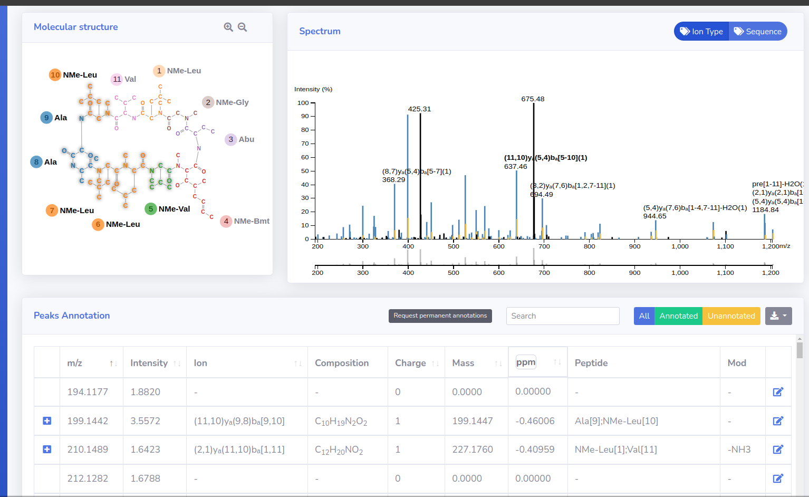
Bioinformatics data engineer and scientific software engineer with more than 10 years of experience developing scalable data pipelines, machine learning models, and research software for genomics and mass spectrometry. My work combines data engineering, statistical modeling, and software development to transform complex biological datasets into reproducible computational solutions. I enjoy designing maintainable software and promoting reproducible research through modern engineering practices!
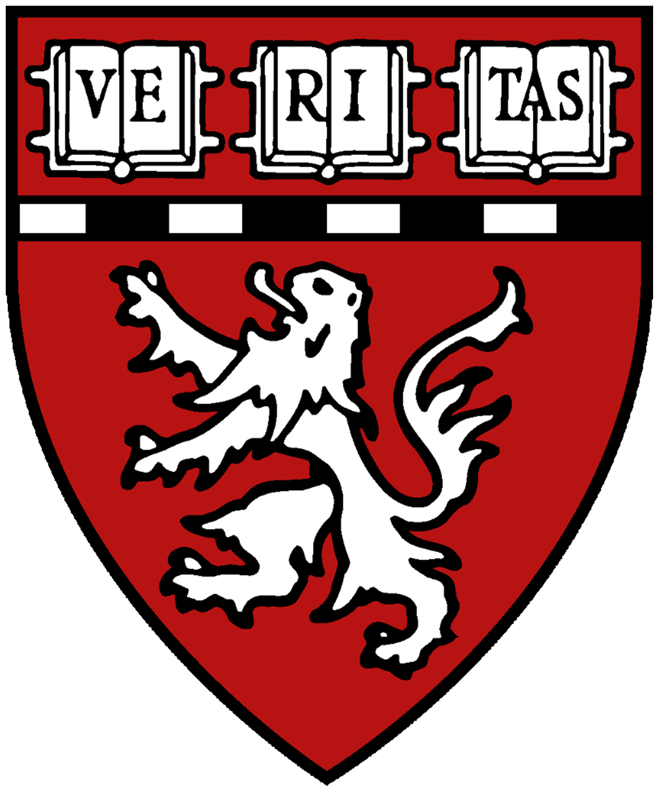
Harvard Medical School | Massachusetts General Hospital - Gulhan Lab
Research Scientist - -
I worked at the intersection of data engineering, data science, and bioinformatics, developing scalable computational solutions for genomic and liquid biopsy research:
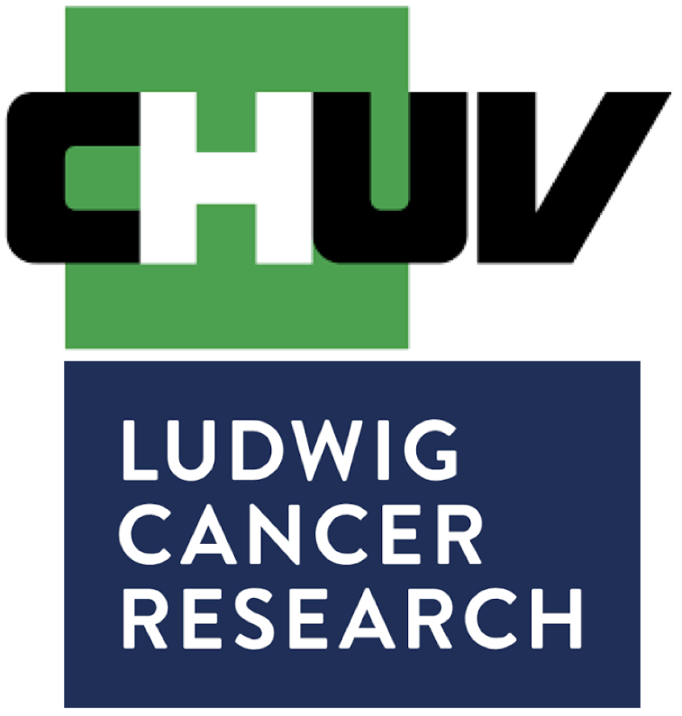
AGORA Cancer Research Center - Bassani Lab
Bioinformatician | Database administrator - -
My responsabilities in Prof. Michal Bassani lab were multiple and diverse. From pipeline and software development to data storage and visualization:
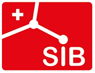
Swiss Institute of Bioinformatics - Proteome Informatics Group
Ph. D. Student - -
I was granted with a SIB PhD Fellowship in the group of Frederique Lisacek, a group highly focused on the computational side of bioinformatics, where I adquired experience in software development and good programming practices:
JAX Cancer Center - The Chuang Lab
Bioinformatics researcher - -
Short experience in the field of transcriptomics. During this period I worked remotely for the team of Prof. Jeffrey H. Chuang.
Barcelona Biomedical Research Park - Computational Genomics Group
Bioinformatics researcher - -
I contributed in the group of Prof. Eduardo Eyras by bringing my expertise in proteomics (adquired during my master thesis) in one of their studies:
Lund University - Computational Proteomics group
Master's Student - -
My first practical experience in bioinformatics was in this group leaded by Fredrik Levander. I learned the principles of proteomics, MS/MS interpretation and I performed some data analysis:
NRPro

ipMSDB
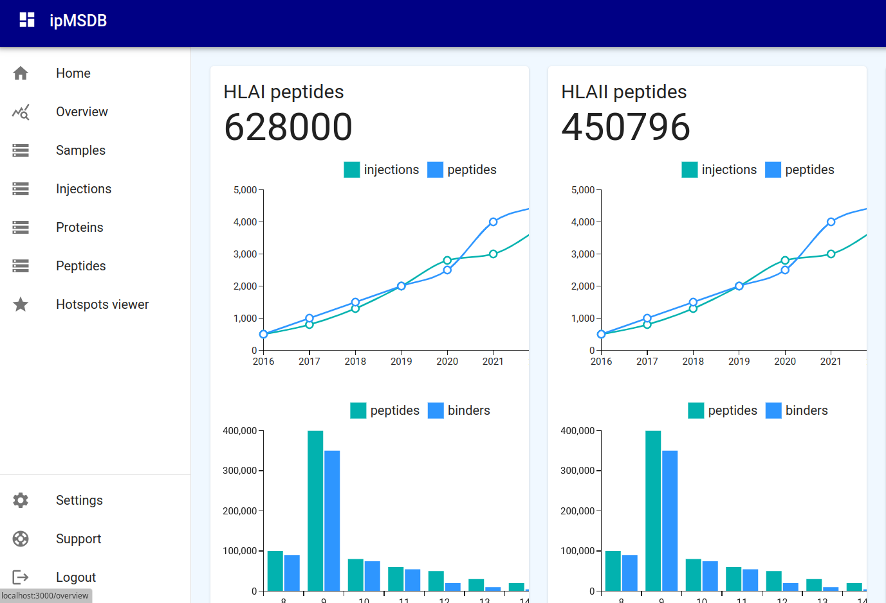
KFP
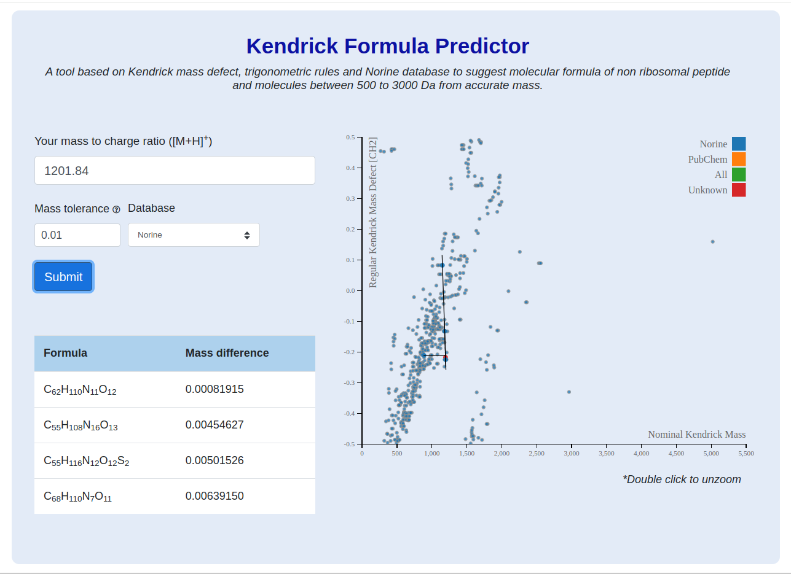
rBAN
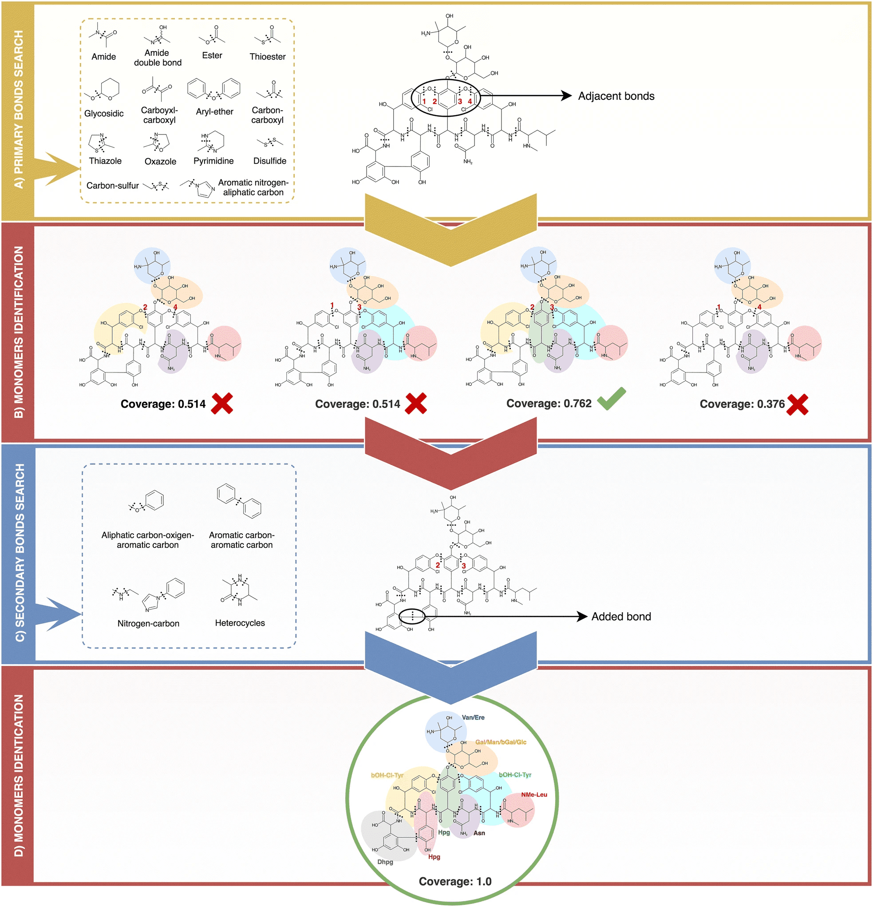
University of Geneva
Ph.D. in Bioinformatics - -
University of Barcelona & Polytechnic University of Catalonia
Master's degree in Biomedical Engineering - -
University of Vic - Central University of Catalonia
Bachelor's degree in Biotechnology - -
ipMSDB
Immunopeptidomics database with more 1.000.000 HLAI/HLAII peptides. The data was retrieved from thousands of mass spectrometry experiments and analyzed in an HPC cluster with a nextflow pipeline that included tools such as Fragpipe and MixMHC.
Private database - No public access is available.
rBAN
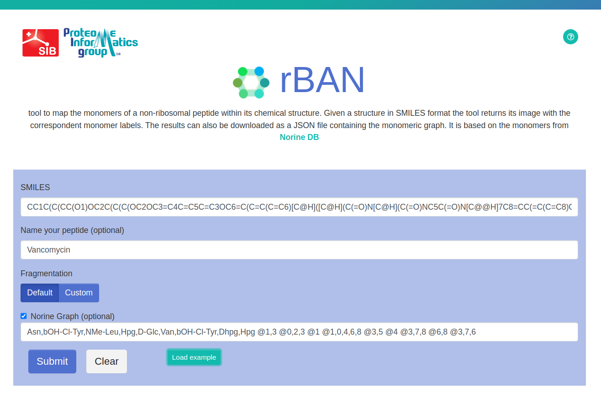
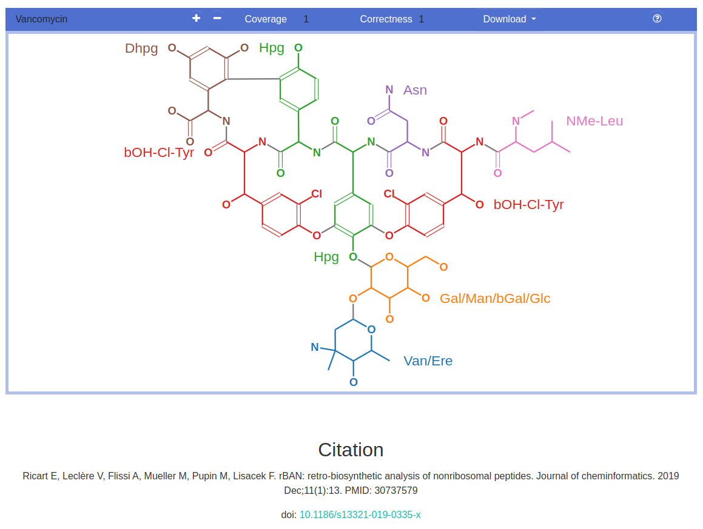
rBAN (retroBiosynthetic Analyisis of Nonribosomal peptides) is a computational tool designed to predict the monomeric graph of nonribosomal peptides from their atomic structure. To achieve that the chemical structure of the input compounds (SMILES format) is first converted into a graph representation. Then, certain bonds are mapped using a substructure search algorithm. Finally, these bonds are disconnected and the resulting fragments are matched against a monomers database in order to identify the moieties.
NRPro
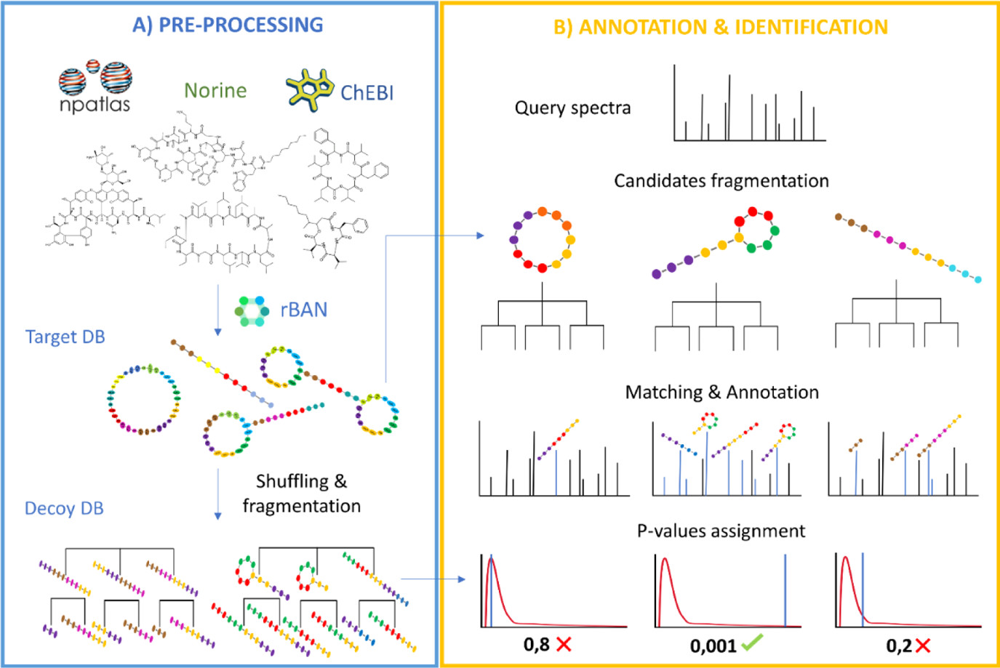
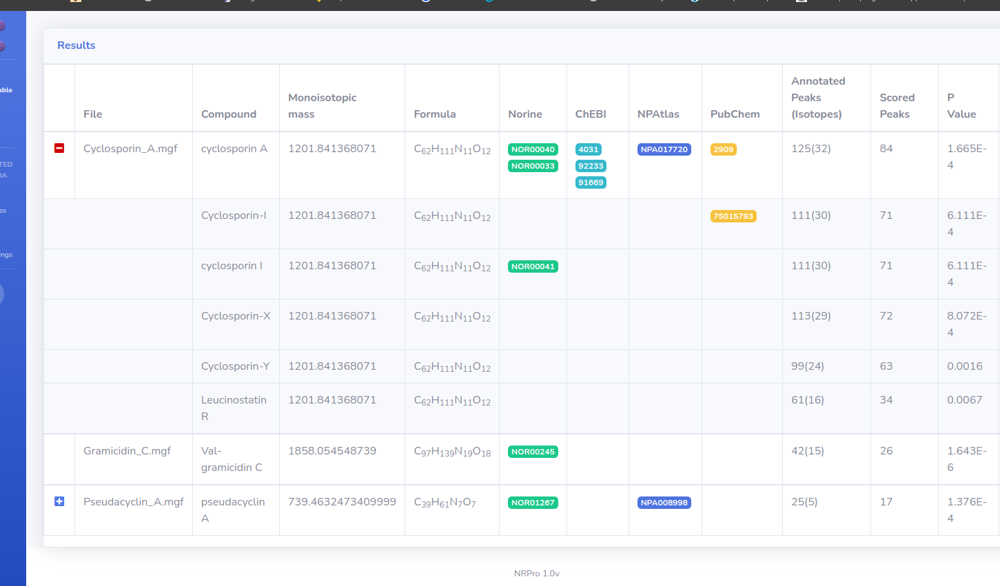
NRPro is a web application for the identification and annotation of tandem mass spectra from peptidic natural products. That involved the implementation of a fragmentation model mimicking the breakages of these compounds in the mass spectrometer. The generated fragmentation trees are matched and scored against the experimental spectra. The database behind the software is the result of merging compounds from Norine, ChEBI and the Natural Products Atlas.
KFP
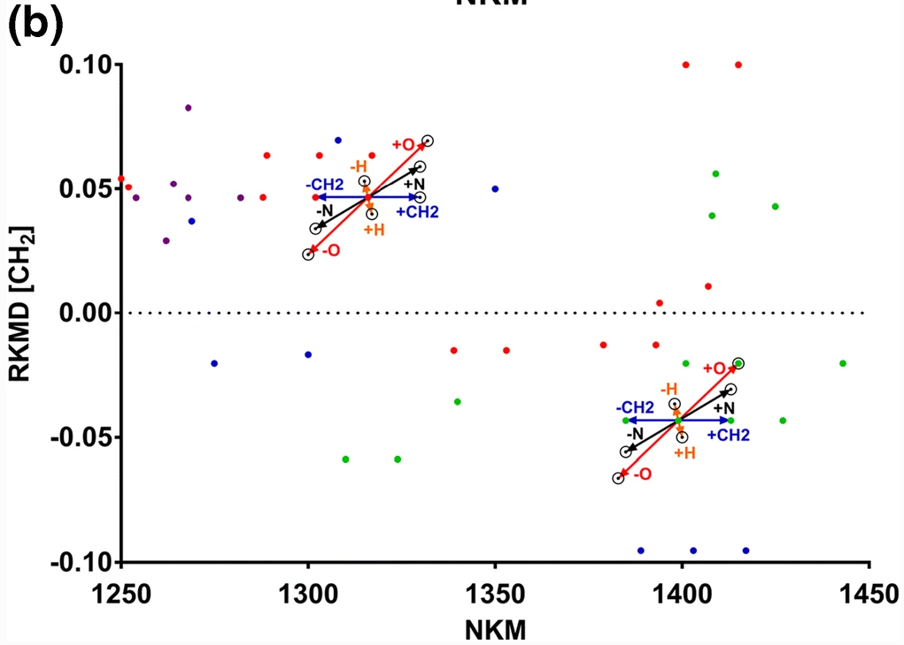
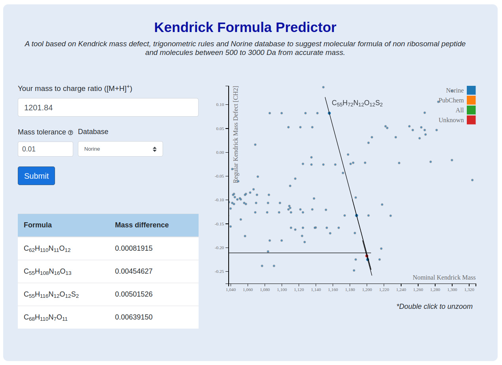
KFP (Kendrick Formula Predictor) is a web application to predict peptidic natural products molecular formula out of a given monoisotopic mass using the Kendrick Mass defect (KMD). The approach consists in using a target database to create the KMD plot from which molecular formula can be predicted.